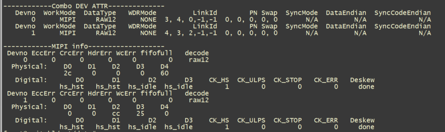
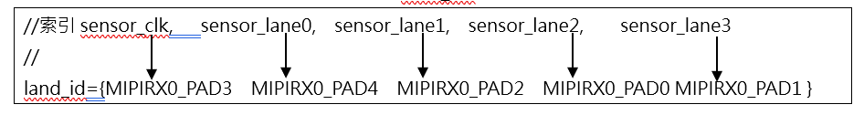
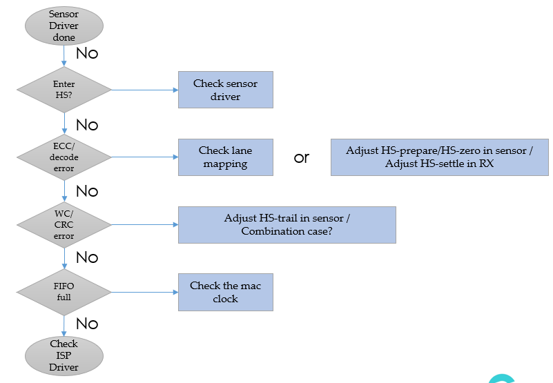
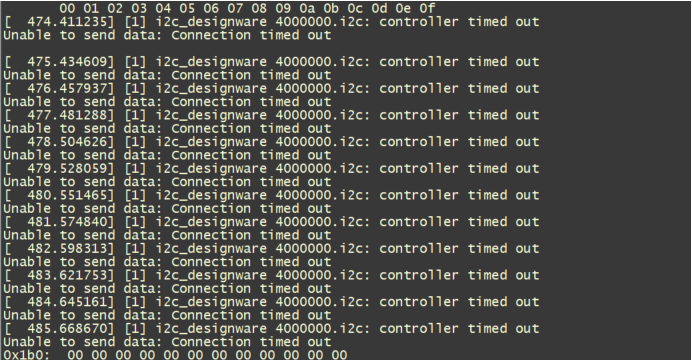
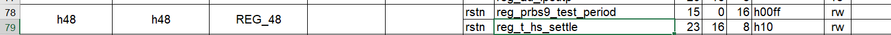
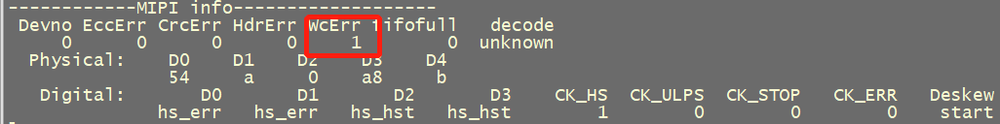

11. FAQ¶
11.1. Procthe corresponding content¶
{kind=link}

Linux: # cat /proc/mipi-rx
Alios: # proc_mipi_rx
Combo DEV ATTRmainlyYesthe corresponding contentsensorthe corresponding contentInterfaceConfigurationinformation：
Devno: sensorNumber，0Tablethe corresponding contentsensor0，1Tablethe corresponding contentsensor1, the corresponding contentSupported2the corresponding contentsensorthe corresponding contentInput
WorkMode:Tablethe corresponding contentInterfaceType（mipi/sublvds/ HISPI /BT656…）
DateType:Tablethe corresponding contentsensorDataformat（raw8/raw10/raw12/ YUV422_8BIT…）
WDRMode:wdrmode（noneTablethe corresponding contentwdr，the corresponding contentwdr mode:VC, DT, Manual）
LinkId: lanethe corresponding contentConfiguration
PN swap:PNthe corresponding content，ifthe corresponding content，the corresponding contentlaneConfigurationthe corresponding content1
SyncMode/DataEndian/SyncCodeEnddian:the corresponding contentmipiInterfacethe corresponding contentSupportedthe corresponding contentNonethe corresponding contentConfiguration，the corresponding contentsublvds、hispithe corresponding contentneedConfiguration
MIPI INFOmainlyYesmipi-rxthe corresponding contentinformation：
EccErr、CrcErr、HdrErr、WcErr: ifthe corresponding content0Tablethe corresponding contentEcc,crc,wcthe corresponding contentRelatederr，needCheck lane mappingthe corresponding content、mipithe corresponding content、laneHardwarethe corresponding content。
Fifofull:ifthe corresponding content0Tablethe corresponding contentmacthe corresponding content，needthe corresponding contentmac clk.
Decode:Tablethe corresponding contentDatalType（Raw12/raw10/raw8/YUV422…）
PhySical:D0-D4Tablethe corresponding contentlanethe corresponding contentData，the corresponding contenthi speed statethe corresponding content，D0-D4the corresponding contentDatathe corresponding content。
Digital：D0-D4displaythe corresponding contenthi speed statethe corresponding contentdata lanestatus。CK_HS、CK_ULPS、CK_ERR、DeskewTablethe corresponding contentclk lanestatus，normalthe corresponding contentCK_HS=1,the corresponding content0，the corresponding contentYesthe corresponding contentcontinues clkthe corresponding content CK_HS=1,CK_STOP=1。
11.2. Sensor Relatedlogthe corresponding content¶
Linuxoperation
the corresponding contentcif drv log:
echo "module cvi_mipi_rx +p" > /sys/kernel/debug/dynamic_debug/control
dmesg -n 8
the corresponding contentsyslogthe corresponding content：
Outputthe corresponding contentSerial Portthe corresponding content
/sbin/syslogd -l 8 -s 2048 -O /dev/console
orOutputthe corresponding contentFile
/sbin/syslogd -l 8 -s 2048 -O /mnt/data/mw.txt
11.3. the corresponding contentConfigurationlanethe corresponding content¶
Notethe corresponding contentConfigurationthe corresponding contentlane idthe corresponding contentsensorthe corresponding contentConfiguration，lane_idthe corresponding contentIndexthe corresponding contentTablethe corresponding contentYesSensorthe corresponding contentLane ID， Indexthe corresponding content0Tablethe corresponding contentsensor clock，Indexthe corresponding content1~4Tablethe corresponding contentsensor lane 0~3。
land_idthe corresponding contentTablethe corresponding contentYessocthe corresponding contentMIPI-Rxthe corresponding contentLane ID， 0Tablethe corresponding contentMIPIRX1_PAD0，1Tablethe corresponding contentMIPIRX1_PAD1， the corresponding contentusethe corresponding contentlanethe corresponding contentlane_idConfigurationthe corresponding content-1。
the corresponding contentsensorthe corresponding contentsocthe corresponding contentlanethe corresponding contentas followsFigurethe corresponding content，the corresponding contentlane idConfigurationthe corresponding contentYes{3，4，2，0，1}.
sensor

soc

SENSORPins |
IPI LanePins |
|---|---|
MIPI_CK (index = 0) |
MIPIRX0_3 (value = 0) |
MIPI_0 (index = 1) |
MIPIRX0_4 (value = 1) |
MIPI_1 (index = 2) |
MIPIRX0_2 (value = 2) |
MIPI_2 (index = 3) |
MIPIRX0_0 (value = 3) |
MIPI_3 (index = 4) |
MIPIRX0_1 (value = 4) |
{kind=link}

11.4. the corresponding contentselectMACFrequency¶
MACTablethe corresponding contentispthe corresponding contentsensorDatathe corresponding contentFrequency，
the corresponding contentMAC_Freq * pix_width = lane_num * MIPI_Freq * 2。
MAC_Freq：VI MACthe corresponding contentFrequency
pixel_width：the corresponding content
lane_num：MIPI lanethe corresponding content
MIPI_Freq：the corresponding contentlanethe corresponding contentFrequency
the corresponding contentMAC freqthe corresponding content400M，pixel_width = 12，lane_num = 4，the corresponding contentSupportedthe corresponding contentMIPI_Freq = 400 * 12 / ( 4 * 2) = 600MHz。
whereMIPI_FreqYesTablethe corresponding contentphy_clk，the corresponding contentYesbps/2。the corresponding contentsony imx335the corresponding contentYes1188Mbpsthe corresponding contentlane, phy_clk = 1188/2=594Mhz。
the corresponding content，ifsensorthe corresponding contentdata rate，the corresponding contentmac freq.
11.5. errorCheckflow¶
{kind=link}

11.5.1. I2C Write Fail¶
sensor i2cthe corresponding contentverify
CheckI2C bus id
CheckI2C slave addr
Checksensorthe corresponding contentaddr/datathe corresponding content（8bit or 16bit）
the corresponding contentConfigurationthe corresponding contenttime out error
{kind=link}

Check hardwareYesNonormal
verifyConfigurationthe corresponding contentrst, pwdn, mclkthe corresponding contentConfigurationthe corresponding content
LinuxoperationCommand：
echo "snsr_on 0 1 1" > /proc/mipi-rx //1Tablethe corresponding content37.125M, 2Tablethe corresponding content25M, 3Tablethe corresponding content27M
echo "snsr_on 1 1 1" > /proc/mipi-rx //1Tablethe corresponding content37.125M, 2Tablethe corresponding content25M, 3Tablethe corresponding content27M
echo "snsr_r 0 0" > /proc/mipi-rx
echo "snsr_r 1 0" > /proc/mipi-rx
AliosoperationCommand：
the corresponding contentsensor testthe corresponding contentInput255the corresponding content
the corresponding contenti2cdetect -y –r NCommandTesti2cthe corresponding contentNodetectionthe corresponding content。NTablethe corresponding contentsensorthe corresponding contenti2cport（Aliosuseiic detect N Command）
Checkpower onthe corresponding contentYesNothe corresponding contentspecthe corresponding content（the corresponding contentmclk，i2c）
11.5.2. Decode err¶
cat /proc/mipi-rx（Alios the corresponding contentproc_mipi_rx），viewprocthe corresponding content，the corresponding contentYesNothe corresponding contenths-state， the corresponding contentsensorDriverthe corresponding contentlow power statethe corresponding contenthigh speed state。
as followsFigure，ifmipi-rxthe corresponding contentD0-D4the corresponding contentData，andthe corresponding content，the corresponding contentDescriptionthe corresponding contenths-state。
verifyi2cthe corresponding content（i2cdetectthe corresponding contentsensor Address）
verifylanethe corresponding content
ifprocthe corresponding contentdata lanethe corresponding contentDatathe corresponding content，andthe corresponding contentCK_HSthe corresponding content0，Tablethe corresponding contentclk lanethe corresponding content（the corresponding contentverifyclk lane）
ifprocthe corresponding contentdata lanethe corresponding contentDatathe corresponding content，the corresponding contentCK_HSthe corresponding content1，Tablethe corresponding contentclk lanethe corresponding content，the corresponding contenthsmode，the corresponding contentifthe corresponding contentecc、crcthe corresponding contenterror，the corresponding contentTablethe corresponding contentdata lanethe corresponding contentConfigurationthe corresponding content（the corresponding contentverifydata lane）
verifythe corresponding content
the corresponding contentverifythe corresponding content，the corresponding contentCK_HS =0，data lanethe corresponding contentDatathe corresponding content，the corresponding contentYesthe corresponding contenthsthe corresponding content，the corresponding contentcanadjustthe corresponding contenths-zero, hs-trail value，the corresponding contentdetect period。
the corresponding contentverifythe corresponding content， CK_HS =1，data lanethe corresponding contentDatathe corresponding content, the corresponding contentYesthe corresponding contentYesthe corresponding contentecc、crcthe corresponding contenterr，the corresponding contentYes Hs-settlethe corresponding contentYesthe corresponding content，the corresponding contentdata。
verifyhwYesNothe corresponding content
11.5.3. ECC err¶
Check lane Id mapping
Checksensor tx hs-zero/hs-prepare
hs-zero、hs-pareparethe corresponding contentsensor specthe corresponding contentYesthe corresponding contentorthe corresponding contentsensorthe corresponding content，the corresponding contentrecommendadjust。
Checkmipi-rx hs-settle
the corresponding contenths-settlethe corresponding contentTimethe corresponding contentdatathe corresponding content“sync code” ，the corresponding content“sync code” the corresponding content，the corresponding contentecc err。
adjusths-settlecanthe corresponding contentmodifyxxx_cmos_param.has follows，the corresponding contenths_settle。

Linuxoperation:adjusths-settlethe corresponding contentcanthe corresponding contentctrl+zthe corresponding content，the corresponding contentdevmem Commandmodifythe corresponding content0x0300b048the corresponding contentbit[23:16]value，adjustthe corresponding contentInputfgthe corresponding content。
devmem 0x0300b048 32 0xXYZ
{kind=link}

11.5.4. CRC err/Word count err¶
adjustsensor tx hs-trail，ifhs-trailthe corresponding content，the corresponding contentdata，the corresponding contentDatathe corresponding content，the corresponding contentcrc errthe corresponding contentwc err，needadjustsensor the corresponding contenths-trailthe corresponding content。
{kind=link}

11.5.5. vi_select timeout¶
cat /proc/mipi-rxdisplayYesNothe corresponding contenti2c、decode、ecc、crc、wcthe corresponding contenterr.
ifthe corresponding content4the corresponding contentStepthe corresponding contentverifyNonethe corresponding content，
cat /proc/cvitek/vi_dbgCheckYesNothe corresponding contentWidthGTCnt、WidthLSCnt、HeightGTCnt、HeightLSCnt，ifthe corresponding contentTablethe corresponding contentsensor init settingthe corresponding contentcrop sizethe corresponding contentispthe corresponding content，the corresponding contentsensor specverifymodify。
CheckMAC clockYesNothe corresponding content , ifmac clockthe corresponding content，the corresponding contentispprocessspeedthe corresponding contentfifo full,the corresponding contenttimeout。